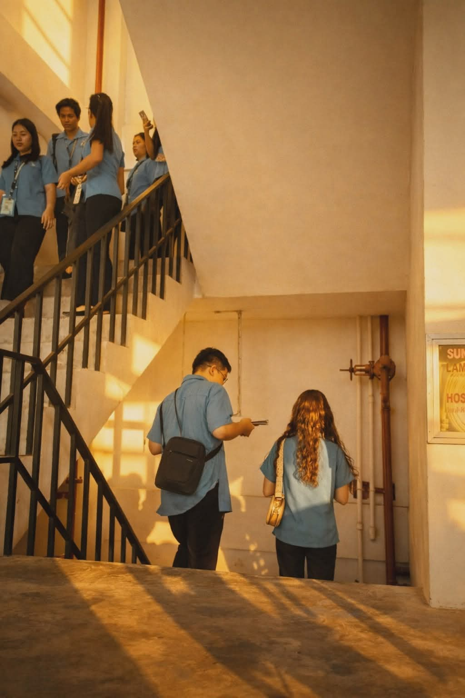
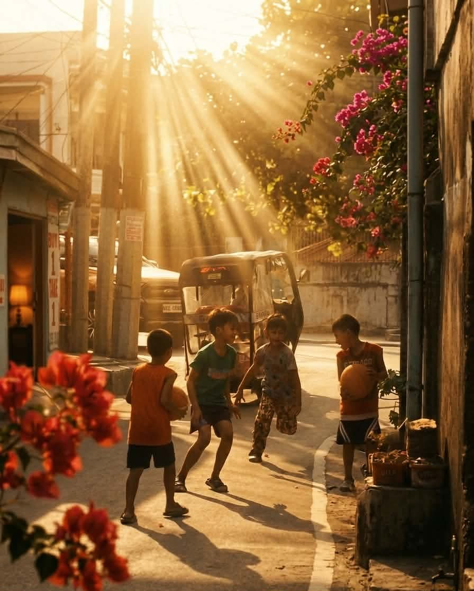
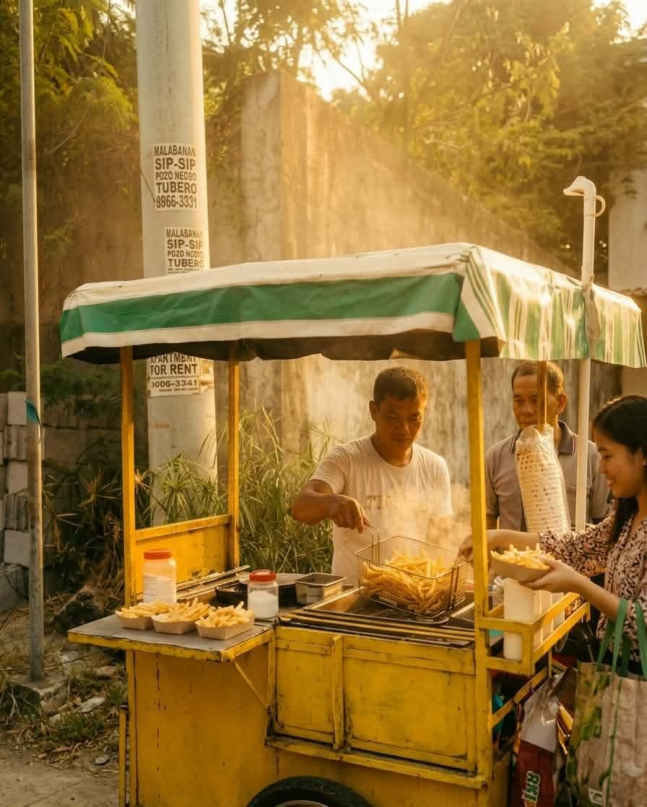
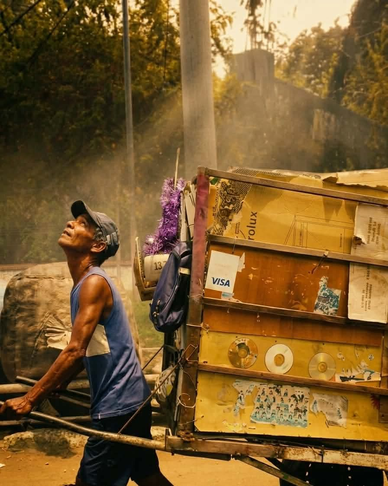

A pause in the rush

1. What story does your photo tell?
This photo tells a quiet story of everyday student life. It shows SMMC students walking down the stairs after class, maybe tired, maybe thinking about their next subject, or just wanting to go home. The warm sunlight gives a feeling that the day is ending, like a soft pause in their busy routine. It also shows that even ordinary days can feel meaningful when you learn to notice them.
2. Why did you choose this subject?
I chose this subject because it represents the real life of an SMMC student. It’s not staged or planned—it’s natural. Students walking, talking, and just being themselves. This is something we experience every day, but we often ignore it. I wanted to show that even simple movements, like going down the stairs, can tell a story.
3. What elements make your photo effective? (Lighting, composition, timing, balance)
The lighting is one of the strongest parts of the photo, as it doesn’t just show the subject but also creates the feeling. The golden sunlight gives the photo a warm, nostalgic feel and adds emotion to the scene. The stairs help guide the viewer’s eyes from the students at the top down to the ones below. There’s a good balance between the upper and lower parts of the image, which makes it feel complete. The timing also works well since it captures a natural moment while they are moving.
4. What challenges did you encounter?
The main challenge was timing. Since the students were moving, it was hard to capture the exact moment where everything looked natural and balanced, and if the timing was off, the composition wouldn’t feel right. Controlling the lighting was also difficult because it depends on the sun, so in photography you don’t control everything—you have to wait for the right moment.
5. How can you improve your shot next time?
Next time, I can improve by being more patient with timing—waiting for a more perfect arrangement of people. I can also try different angles, maybe lower or closer, to make the subject more focused. Adjusting exposure could help avoid very bright or dark areas. I can also experiment with framing to reduce empty space and make the story clearer.
Where childhood runs free

Hands that darn the day

Strength carried in silence
